Cine plătește consultația domnului P.?
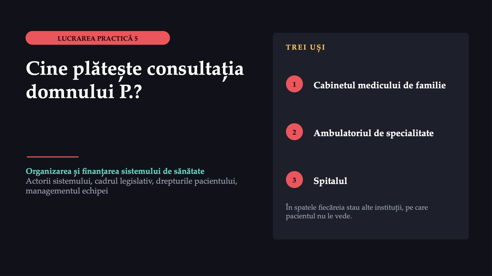
1 / 40Domnul P. vede, în drumul lui, trei uși: cabinetul medicului de familie, ambulatoriul de specialitate și, poate, spitalul. În spatele fiecărei uși stau însă alte instituții, pe care pacientul nu le vede.
Luni dimineață, la cabinetul din orașul D
 2 / 40
2 / 40Luni dimineață, la cabinetul de medicină de familie din orașul D, Județul B. Domnul P. are 61 de ani, este asigurat, înscris pe lista cabinetului de mulți ani. Medicul de familie îi dă un bilet de trimitere la cardiologie, în ambulatoriul de specialitate al Spitalului A, care are contract cu casa de asigurări a județului. Caz construit pentru curs; detaliile sunt plauzibile, nu reale.
Cine plătește consultația de cardiologie a domnului P. și pe ce temei?
![DECIZIA 1 · VOT INDIVIDUAL, FĂRĂ DISCUȚIE MENTIMETER · VOT Cine plătește consultația de cardiologie a domnului P. și pe ce temei? A Ministerul Sănătății, din bugetul de stat, pentru că ambulatoriul aparține unui spital public. B Casa de asigurări a județului, din fondul național unic, pe baza contractului cu furnizorul și a biletului de trimitere. C Direcția de sănătate publică a județului, care controlează ambulatoriul. D Pacientul, care își recuperează apoi banii de la casa de asigurări. [codul QR Mentimeter] Răspundeți pe telefon, la codul afișat.](diapozitive/LP05/003.jpg) 3 / 40
3 / 40Întrebarea, votată individual, fără discuție: cine plătește consultația de cardiologie a domnului P. și pe ce temei?
Convingeți-l pe cel care a votat altfel. Apoi votați din nou.
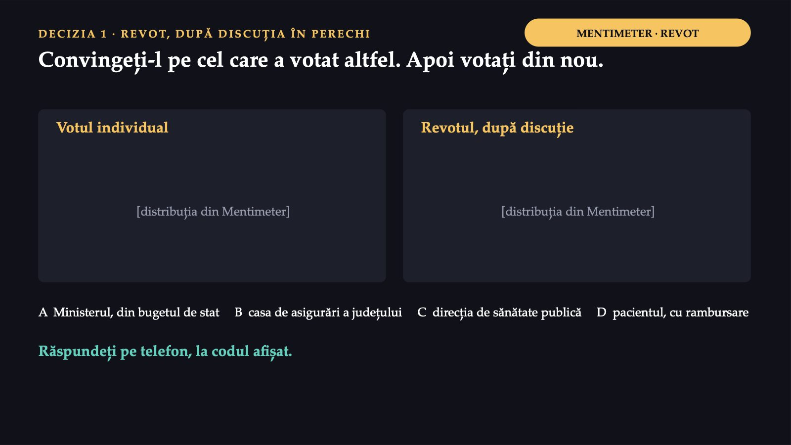
4 / 40Două minute de discuție cu colegul de bancă, cu cerința „convingeți-l pe cel care a votat altfel”, apoi același vot. Explicația vine abia după revot.
Regulile, controlul și plata
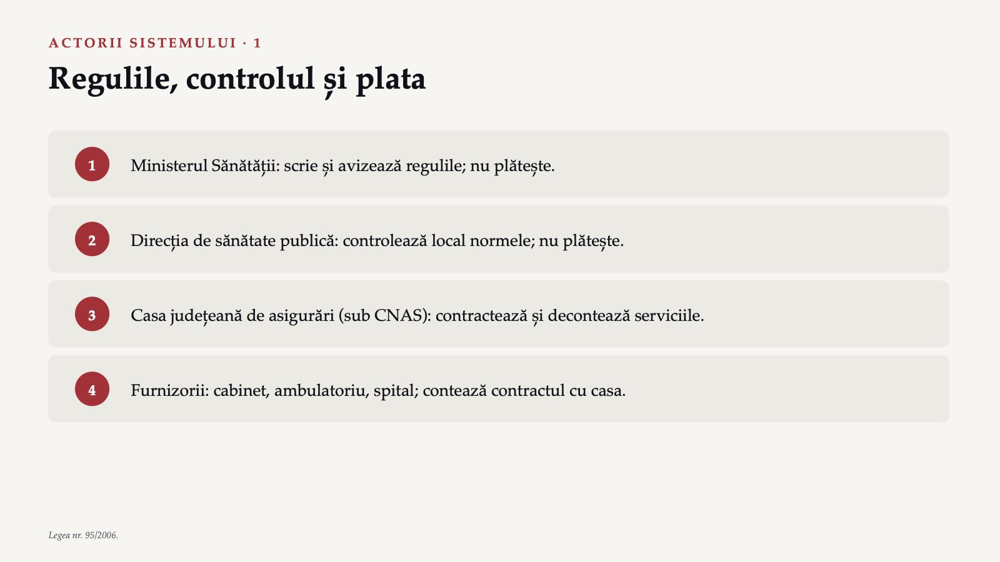
5 / 40Ministerul nu plătește consultația domnului P.; el scrie și avizează regulile în care se face ea. Pentru domnul P., direcția de sănătate publică este instituția care poate verifica dacă ambulatoriul și cabinetul funcționează după norme, nu instituția care plătește.
Cine autorizează, cine acreditează, cine este pacientul
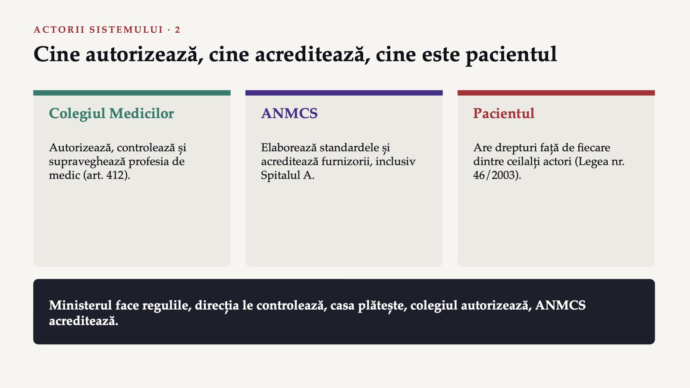
6 / 40Medicul de familie și cardiologul domnului P. pot practica pentru că sunt membri ai colegiului. Pentru domnul P., acreditarea Spitalului A este garanția, verificată din afară, că spitalul respectă un set de standarde, inclusiv cele privind drepturile pacientului.
Patru acte, de niveluri diferite
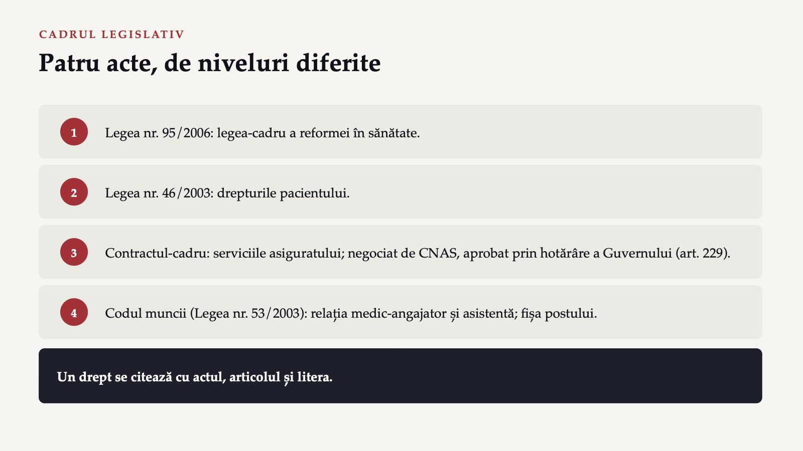
7 / 40Regula de lucru pentru fișa de lucru: un drept sau o obligație se citează cu actul normativ, cu articolul și, unde este cazul, cu alineatul și litera, în forma consolidată actuală. „Așa scrie în lege” nu este un argument; „art. 22 din Legea nr. 46/2003” este.
Primar, ambulatoriu, spital: medicul de familie ca filtru
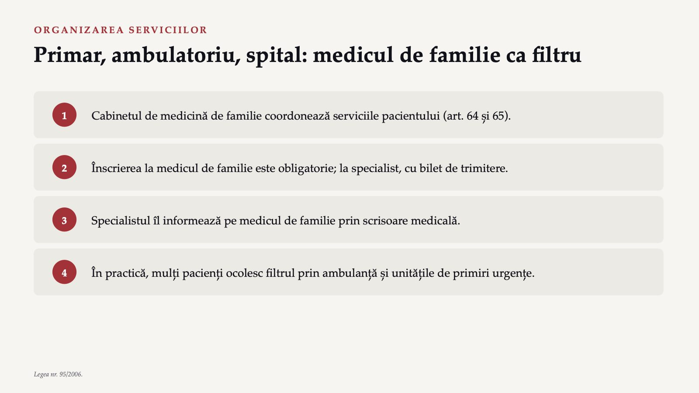
8 / 40Înscrierea la un medic de familie este obligatorie, iar consultația la specialist, decontată de casa de asigurări, cere bilet de trimitere. Analiza sistemului românesc arată că filtrul funcționează slab: mulți pacienți ocolesc medicul de familie prin ambulanță și unitățile de primiri urgențe.
Patru variante, patru urmări
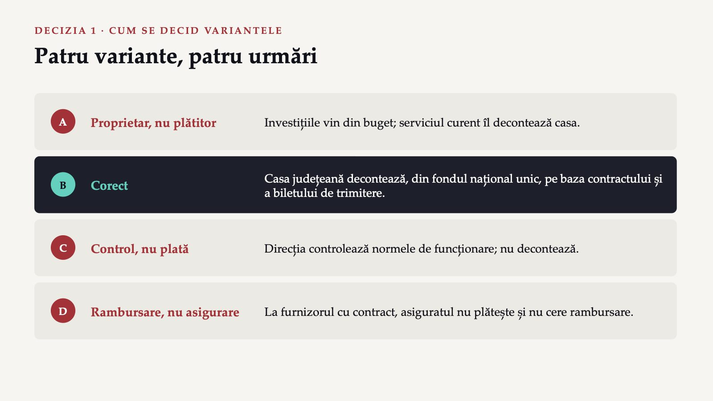
9 / 40Consultația de cardiologie a domnului P. o plătește casa de asigurări de sănătate a județului, din FNUASS, pentru că ambulatoriul are contract cu ea, iar pacientul vine cu bilet de trimitere de la medicul de familie (varianta B).
Pasul 1: harta actorilor și a fluxurilor
![FIȘA DE LUCRU 5 · PASUL 1 MICROSOFT FORMS · 6 MINUTE Pasul 1: harta actorilor și a fluxurilor a Cine decontează consultația de cardiologie? b Cine a negociat regulile după care se decontează? c Cine poate controla dacă ambulatoriul funcționează după norme? d Cine a autorizat cardiologul să practice? e Cine a acreditat Spitalul A? f Cine coordonează serviciile primite de la toți furnizorii? [QR FORMULAR] [linkul scurt] Pentru fiecare: instituția și temeiul legal. Apoi harta: banii, pacientul, informația. Răspundeți pe telefon, la codul afișat.](diapozitive/LP05/010.jpg) 10 / 40
10 / 40Pasul 1 al fișei de lucru: harta actorilor și a fluxurilor pentru drumul domnului P.
Cele trei componente ale plății medicului de familie
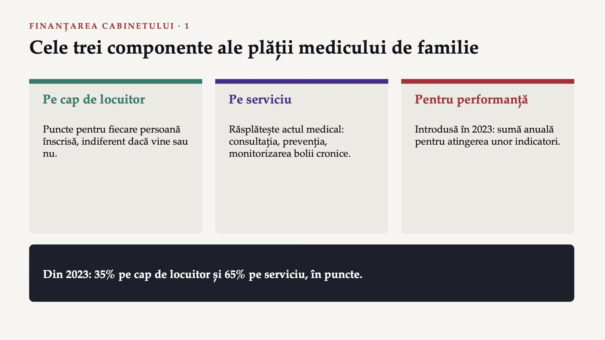
11 / 40Până în 2023, medicii de familie au fost plătiți 50% pe cap de locuitor, cu ajustare după vârsta și sexul pacienților, și 50% pe serviciu; din 2023, raportul este de 35% pe cap de locuitor și 65% pe serviciu, ambele exprimate în puncte.
2 200
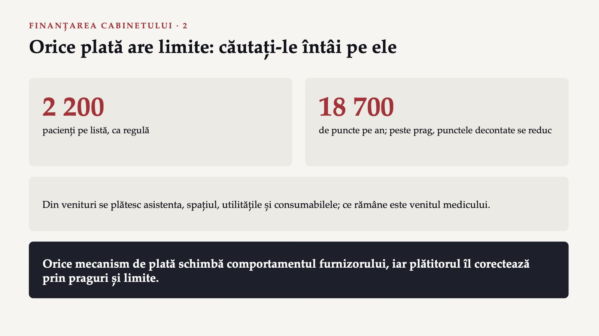
12 / 40Lista unui cabinet cu contract are, ca regulă, cel mult 2 200 de pacienți; un număr mai mare este permis, dar formula plății pe cap de locuitor îl descurajează. Peste acest prag, care înseamnă peste 18 700 de puncte pe an, punctele decontate se reduc, cu excepția zonelor cu deficit de medici. Pentru a înțelege un mecanism de plată, căutați întâi limitele lui, nu doar formula.
1 750
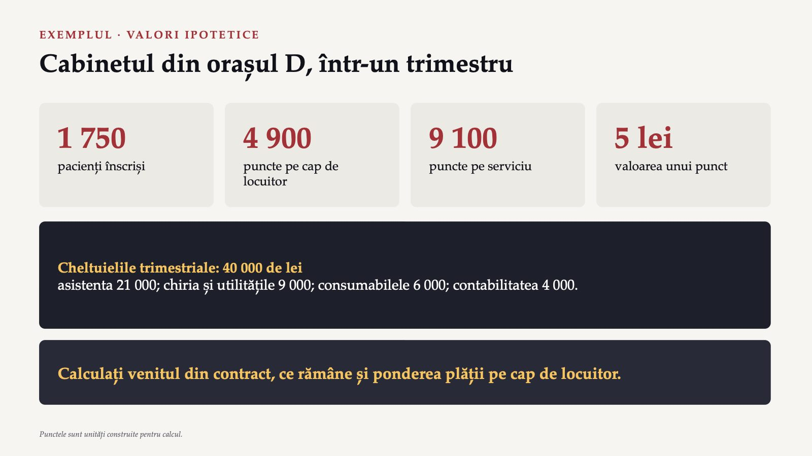
13 / 40Valori ipotetice. Cabinetul are 1 750 de pacienți înscriși. Într-un trimestru, lista lui produce 4 900 de puncte pe cap de locuitor, iar serviciile raportate produc 9 100 de puncte pe serviciu. Pentru simplitate, ambele puncte au aici aceeași valoare, 5 lei. Cheltuielile trimestriale ale cabinetului sunt de 40 000 de lei.
Pasul 2: finanțarea cabinetului
![FIȘA DE LUCRU 5 · PASUL 2 MICROSOFT FORMS · 6 MINUTE Pasul 2: finanțarea cabinetului a Venitul din contractul cu casa și ce rămâne după cheltuieli. b Ponderea plății pe cap de locuitor; cu ce structură reală se potrivește? c Refaceți calculul după plecarea a 250 de pacienți (aceleași puncte pe pacient, aceleași cheltuieli). d De ce scade venitul medicului mai mult, în proporție, decât lista? [QR FORMULAR] [linkul scurt] Folosiți calculatorul. Punctele sunt unități construite. Răspundeți pe telefon, la codul afișat.](diapozitive/LP05/014.jpg) 14 / 40
14 / 40Pasul 2 al fișei de lucru: finanțarea cabinetului din orașul D.
Rezolvarea se vede în formularul fișei, după ce o predați.
Rezolvarea se vede în formularul fișei, după ce o predați.
Joi, la ora deschiderii, telefonul cabinetului sună
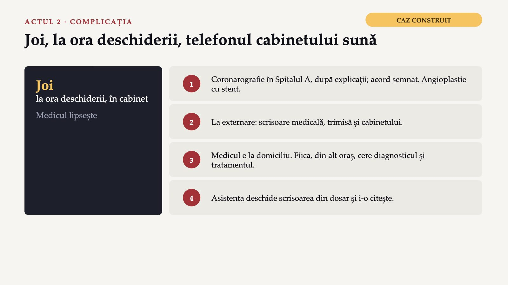
16 / 40Joi, la ora deschiderii, telefonul cabinetului sună. Medicul este la o vizită la domiciliu. Fiica domnului P., care locuiește în alt oraș, spune că tatăl ei „nu vrea să le spună nimic” și cere să afle ce diagnostic a primit și ce tratament are. Asistenta deschide scrisoarea medicală din dosarul cabinetului și i-o citește.
Ce ar fi trebuit să facă asistenta la telefon?
![DECIZIA 2 · VOT INDIVIDUAL, FĂRĂ DISCUȚIE MENTIMETER · VOT Ce ar fi trebuit să facă asistenta la telefon? A Să-i citească fiicei scrisoarea: un copil este reprezentantul legal al pacientului. B Să nu dea informații la telefon: rudele pot fi informate numai cu acordul pacientului. C Să-i citească scrisoarea: cabinetul coordonează îngrijirile, iar legea permite comunicarea fără consimțământ. D Să-i spună numai că rezultatul „nu este grav”, fără diagnostic. [codul QR Mentimeter] Răspundeți pe telefon, la codul afișat.](diapozitive/LP05/017.jpg) 17 / 40
17 / 40Întrebarea, votată individual, fără discuție: ce ar fi trebuit să facă asistenta la telefon?
Convingeți-l pe cel care a votat altfel. Apoi votați din nou.
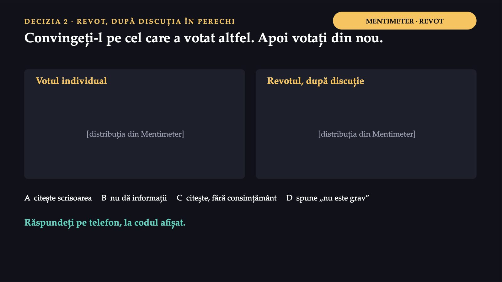
18 / 40Două minute de discuție, cu cerința „convingeți-l pe cel care a votat altfel”, apoi același vot. Explicația vine după revot.
Legea nr. 46/2003: trei capitole de practică
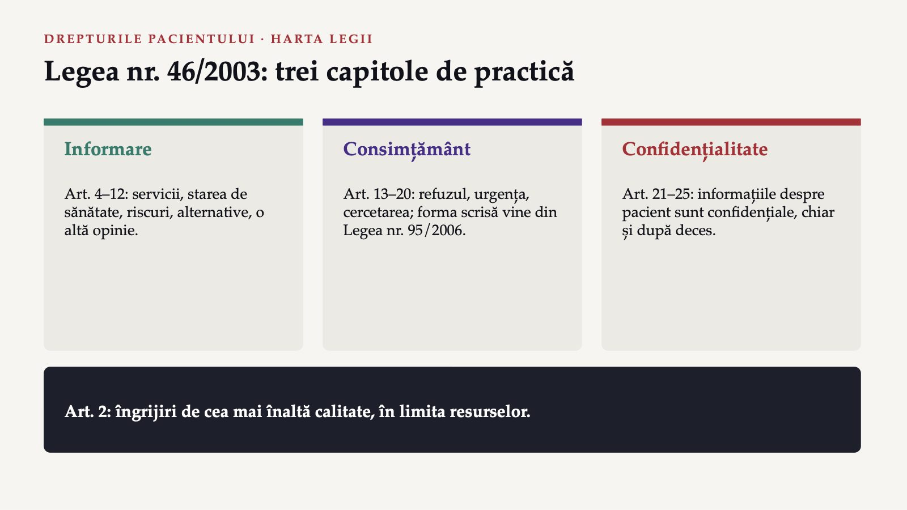
19 / 40Pentru un medic, cele mai frecvente situații de practică stau în trei dintre capitole: informarea, consimțământul și confidențialitatea. Prima formulare nu promite totul: ea leagă dreptul de resursele sistemului, adică exact de finanțarea discutată în secțiunea 2.
Pacientul controlează cine află și cât află
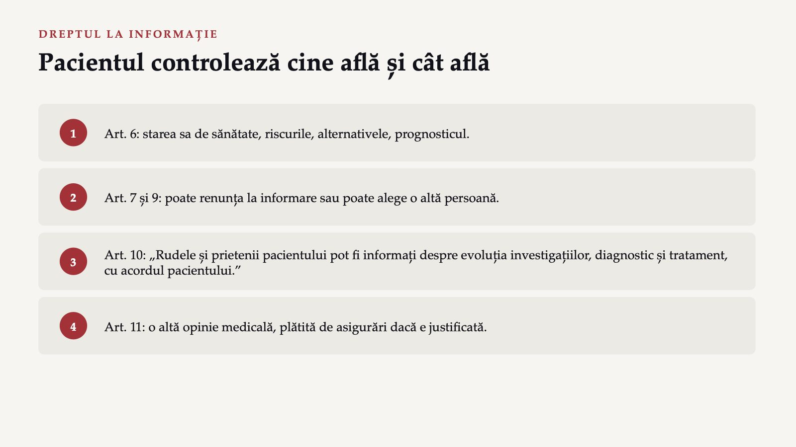
20 / 40„Rudele și prietenii pacientului pot fi informați despre evoluția investigațiilor, diagnostic și tratament, cu acordul pacientului” (art. 10).
Refuzul, urgența, acordul scris și minorul
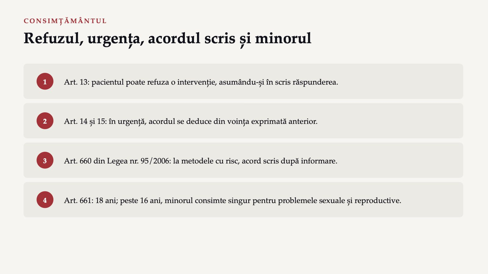
21 / 40Coronarografia domnului P. este un astfel de act: acordul scris, după o informare cu acest conținut, era obligatoriu. Vârsta legală pentru consimțământul informat este de 18 ani.
Ce se poate da altcuiva, și când
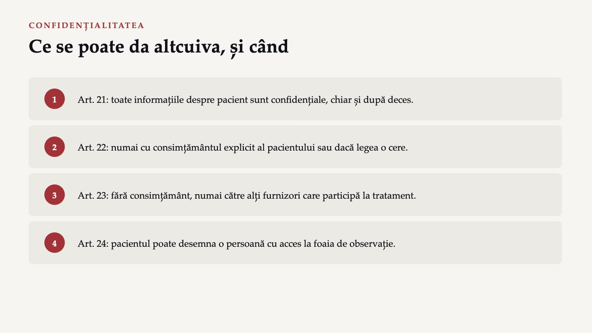
22 / 40Excepția din art. 23 privește, deci, medicii și unitățile care îl tratează pe pacient, nu familia lui.
Continuitatea, reproducerea și încălcarea drepturilor
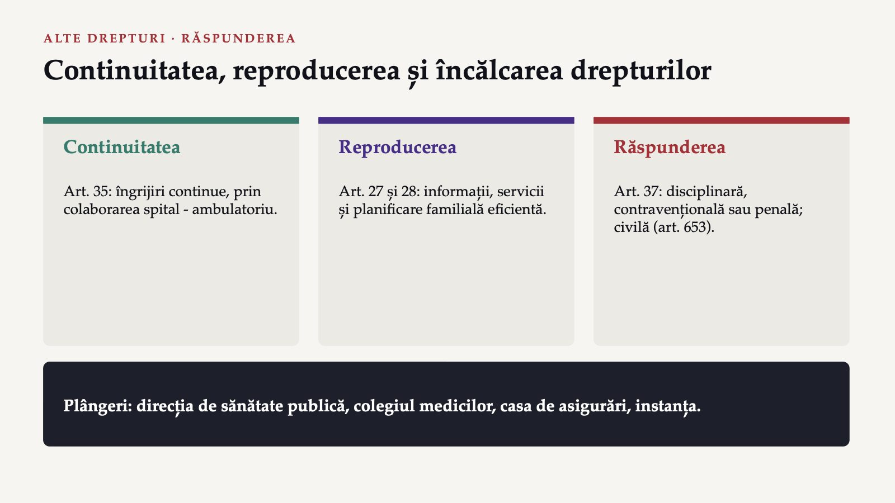
23 / 40Nerespectarea de către personalul medico-sanitar a confidențialității datelor despre pacient și a celorlalte drepturi ale lui atrage, după caz, răspunderea disciplinară, contravențională sau penală (art. 37). Legea nr. 95/2006 adaugă răspunderea civilă.
Rezolvarea se vede în formularul fișei, după ce o predați.
Rezolvarea se vede în formularul fișei, după ce o predați.
Pasul 3: drepturile pacientului, cu articolul
![FIȘA DE LUCRU 5 · PASUL 3 MICROSOFT FORMS · 6 MINUTE Pasul 3: drepturile pacientului, cu articolul a La spital: ce trebuia să cuprindă informarea și de ce forma scrisă? b Asistenta a citit scrisoarea fiicei: ce drept a fost încălcat? c Domnul P. cere o altă părere: are dreptul și cine plătește? d Dacă refuza coronarografia, ce trebuia să se întâmple? [QR FORMULAR] [linkul scurt] Pentru fiecare situație: dreptul și articolul care îl prevede. Răspundeți pe telefon, la codul afișat.](diapozitive/LP05/025.jpg) 25 / 40
25 / 40Pasul 3 al fișei de lucru: drepturile pacientului în drumul domnului P., cu articolul.
Ce face fiecare om din echipă, și cine răspunde
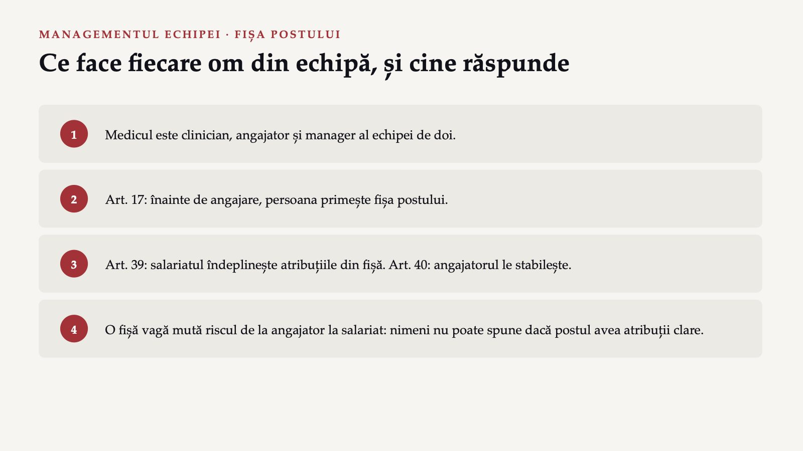
26 / 40Fișa postului este, deci, documentul prin care angajatorul spune ce face fiecare om din echipă, iar salariatul răspunde pentru ce scrie în ea.
Fișa postului asistentei (extras)
![EXEMPLUL · VALORI IPOTETICE Fișa postului asistentei (extras) 1 Primește pacienții, verifică calitatea de asigurat, programează consultațiile. 2 Măsoară tensiunea arterială, glicemia, greutatea și talia. 3 Efectuează tratamentele injectabile și vaccinările indicate de medic. 4 „Răspunde la telefon și oferă informații pacienților.” 5 Arhivează scrisorile medicale și rezultatele analizelor. 6 „Îndeplinește orice alte sarcini stabilite de medic.” Fișa nu spune nimic despre confidențialitate, identificarea celui care sună sau ce poate da asistenta.](diapozitive/LP05/027.jpg) 27 / 40
27 / 40Valori ipotetice. Fișa este construită pentru curs; ea nu reproduce un model oficial. Atribuțiile 4 și 6 din fișa construită sunt tocmai cele care au produs incidentul. „Oferă informații pacienților” nu spune ce informații, cui și cum se verifică identitatea; „orice alte sarcini” nu spune nimic.
Domnul P. a aflat de telefon și cere explicații
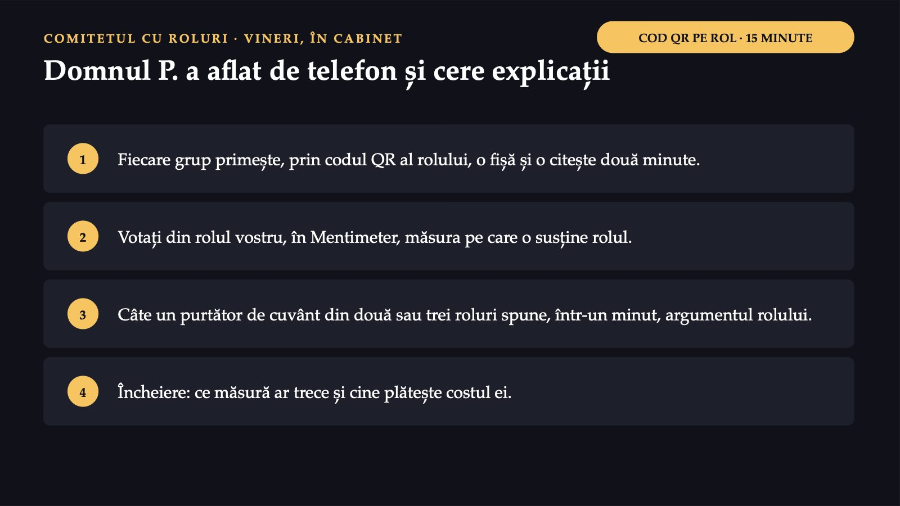
28 / 40Comitetul se reunește vineri, în cabinet, după ce domnul P. a aflat de telefon și a cerut explicații. Fiecare grup primește, prin codul QR al rolului, una dintre fișe, citește rolul două minute și votează din rolul lui, în Mentimeter, măsura pe care o susține.
Cine stă la masa comitetului
![COMITETUL · CINCI ROLURI Cine stă la masa comitetului Medicul de familie, titularul Urmărește: Să păstreze încrederea domnului P. și lista de pacienți. [QR rol] Asistenta medicală Urmărește: Să nu fie sancționată pentru ceva ce nimeni nu i-a interzis. [QR rol] Domnul P., pacientul Urmărește: Să aibă încredere că ce spune în cabinet rămâne acolo. [QR rol] Fiica pacientului Urmărește: Să-și poată ajuta tatăl, care minimalizează mereu ce i se întâmplă. [QR rol] Reprezentantul casei de asigurări Urmărește: Ca furnizorii cu contract să respecte drepturile asiguraților. [QR rol]](diapozitive/LP05/029.jpg) 29 / 40
29 / 40Fiecare grup primește, prin codul QR al rolului, una dintre fișele de mai jos, citește rolul două minute și votează din rolul lui.
Ce măsură susțineți, din rolul vostru?
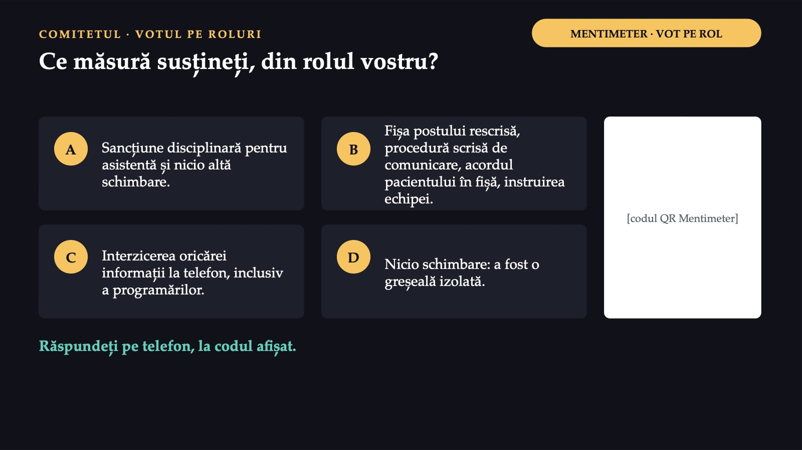
30 / 40Se proiectează votul pe roluri; câte un purtător de cuvânt din două sau trei roluri spune, într-un minut, argumentul rolului. Încheierea: ce măsură ar trece și cine plătește costul ei.
Pasul 4: fișa postului și decizia de management
![FIȘA DE LUCRU 5 · PASUL 4 MICROSOFT FORMS · 6 MINUTE Pasul 4: fișa postului și decizia de management a Cele două atribuții care au produs incidentul și ce lipsește din fișă. b Obligația din Codul muncii care leagă fișa de răspunderea asistentei; dreptul medicului. c Decizia de management în trei rânduri și cum veți ști peste o lună că a funcționat. [QR FORMULAR] [linkul scurt] Citiți extrasul din fișa postului. Decizia trebuie să aibă un indicator verificabil. Răspundeți pe telefon, la codul afișat.](diapozitive/LP05/031.jpg) 31 / 40
31 / 40Pasul 4 al fișei de lucru: fișa postului asistentei și decizia de management.
Rezolvarea se vede în formularul fișei, după ce o predați.
Rezolvarea se vede în formularul fișei, după ce o predați.
Rezolvarea se vede în formularul fișei, după ce o predați.
Rezolvarea se vede în formularul fișei, după ce o predați.
Cazul e construit; deznodământul e plauzibil, nu documentat
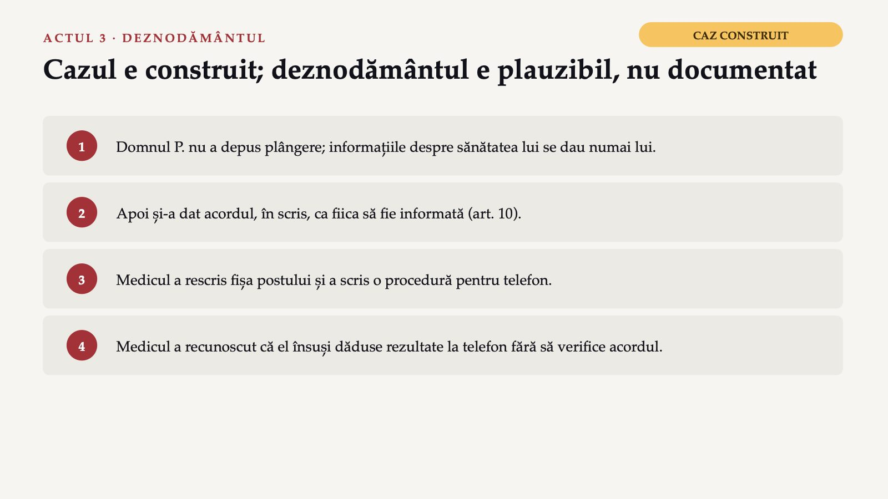
34 / 40Cazul este construit, iar deznodământul de mai jos este cel plauzibil, nu unul documentat. Domnul P. nu a depus plângere.
Pacientă de 17 ani, singură, cere contracepție și roagă ca părinții să nu afle. Ce face medicul?
![DECIZIA 3 · VOT INDIVIDUAL, FĂRĂ DISCUȚIE MENTIMETER · VOT Pacientă de 17 ani, singură, cere contracepție și roagă ca părinții să nu afle. Ce face medicul? A Amână consultația până vine cu un părinte: vârsta consimțământului este de 18 ani. B O consultă și păstrează confidențialitatea: peste 16 ani poate consimți singură. C O consultă, dar îi anunță pe părinți, pentru că sunt reprezentanții ei legali. D O consultă numai dacă situația este o urgență. [codul QR Mentimeter] Răspundeți pe telefon, la codul afișat.](diapozitive/LP05/035.jpg) 35 / 40
35 / 40Trei luni mai târziu, în același cabinet. O pacientă de 17 ani de pe lista cabinetului vine singură și cere o consultație pentru contracepție; roagă ca părinții ei să nu afle. Întrebarea, votată individual: ce face medicul?
Convingeți-l pe cel care a votat altfel. Apoi votați din nou.
36 / 40Se proiectează ambele distribuții; explicația vine după revot.
Art. 661 lit. b): consimțământul minorei de peste 16 ani
![DECIZIA 3 · TEXTUL LEGII Art. 661 lit. b): consimțământul minorei de peste 16 ani „situații medicale legate de diagnosticul și/sau tratamentul problemelor sexuale și reproductive, la solicitarea expresă a minorului în vârstă de peste 16 ani” 1 Legea nu numește contracepția: încadrarea ei aici este o interpretare (art. 27 și 28). 2 Părinții nu pot afla fără consimțământul minorei (art. 21 și 22): deducție din text, nu regulă scrisă expres. B corect. A ignoră excepția, C repetă greșeala din actul 2, D confundă cele două excepții.](diapozitive/LP05/037.jpg) 37 / 40
37 / 40Medicul o consultă și păstrează confidențialitatea (varianta B). Textul legii este acesta, la art. 661 lit. b). Legea nu numește contracepția. Încadrarea consultației pentru contracepție în această excepție este o interpretare. Pentru părinți, răspunsul se deduce din art. 22: este o deducție din text, nu o regulă scrisă expres.
Cinci idei ale lucrării
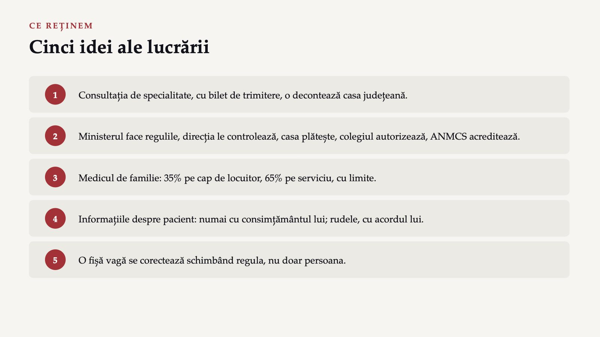
38 / 40Pacientul asigurat nu plătește consultația de specialitate la un furnizor cu contract, dacă vine cu bilet de trimitere. Fișa postului este instrumentul prin care angajatorul stabilește cine face ce.
Ce înseamnă pentru voi
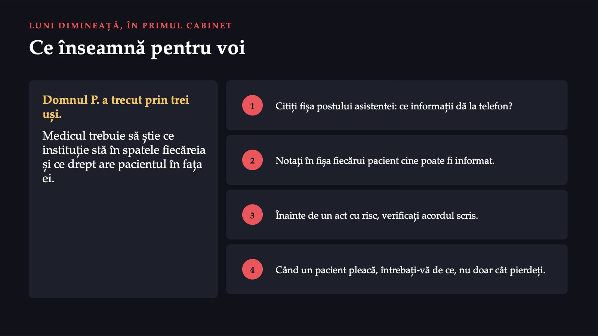
39 / 40Pacientul vede trei uși; medicul trebuie să știe ce instituție stă în spatele fiecăreia și ce drept are pacientul în fața ei. Luni dimineață, în primul cabinet în care lucrați, citiți fișa postului asistentei cu care lucrați și întrebați ce informații dă ea la telefon.
Trei întrebări pentru final
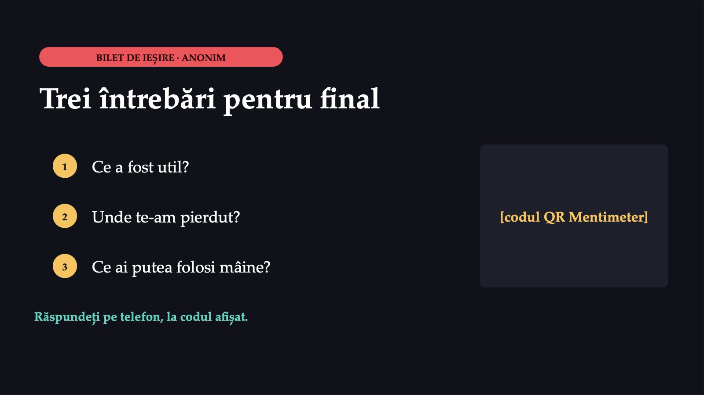
40 / 40Cod QR pe ultimul diapozitiv, trei întrebări deschise: „Ce a fost util?”, „Unde te-am pierdut?”, „Ce ai putea folosi mâine?”.
Săgeți sau spațiu: navigare · O: vedere de ansamblu · N: notele prezentatorului · F: ecran complet · Esc: închidere